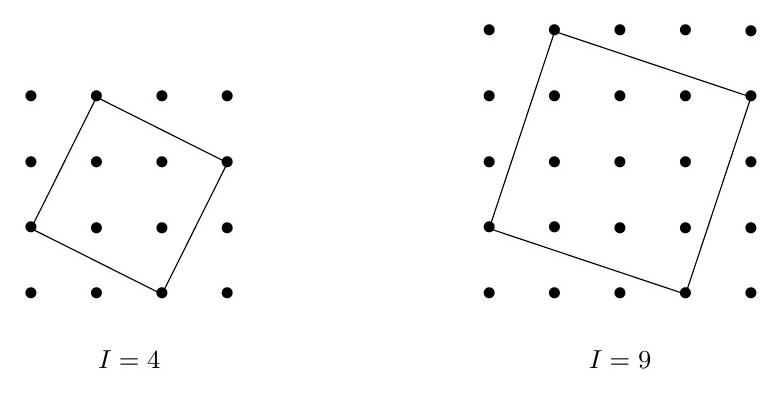
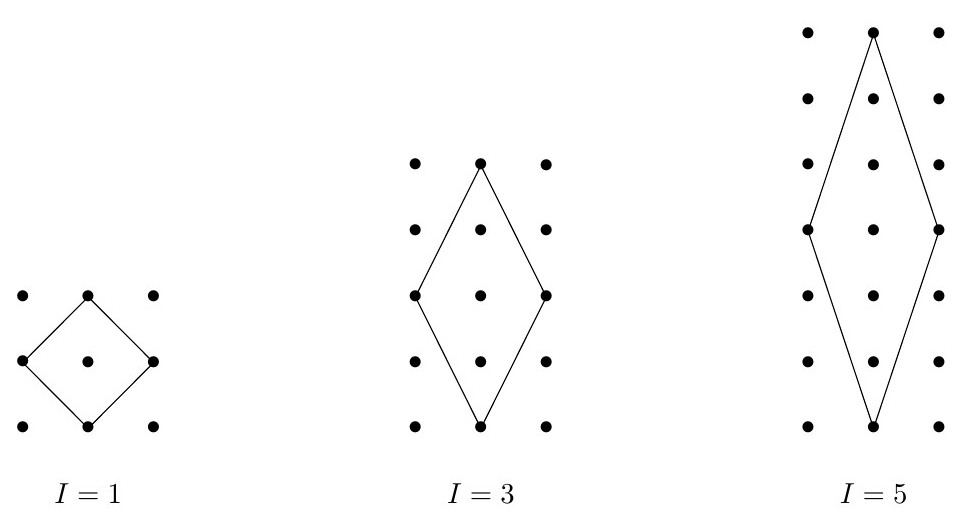
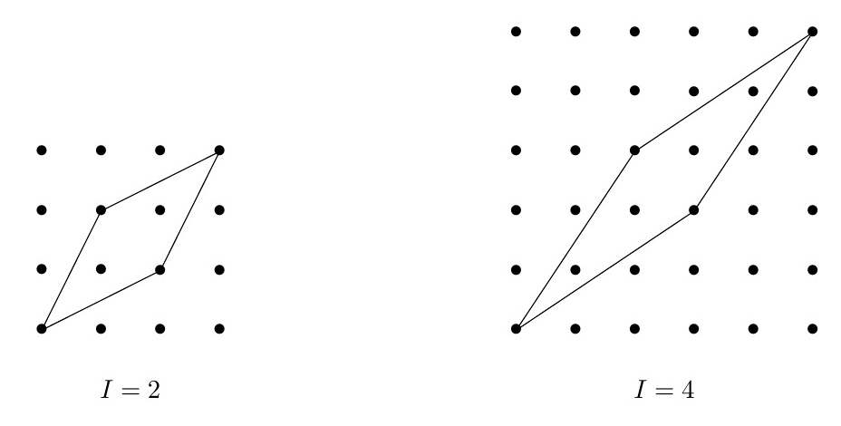
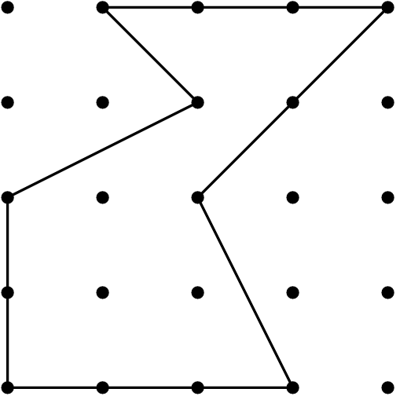

Solução 3. Defina como \(A_n\) uma matriz \(n \times n\) definida pelas mesmas regras e
seja \(D_n = \det A_n\). Pelo
desenvolimento do determinante pela regra de Laplace com relação a
primeira linha, temos \[D_n =
\sqrt{3}D_{n-1}-D_{n-2}.\] A equação característica é
\[x^2-\sqrt{3}x+1=0,\]
que possui como raízes \(\dfrac{\sqrt{3}\pm i}{2} = -iw\) ou \(iw^2\). Aqui \(w=\dfrac{-1+i\sqrt{3}}{2}\) é raíz cúbica
da unidade, i.e, \(w^3=1\). Resolvendo
a recorrência, encontramos \[D_n =
\dfrac{(-iw)^{2n+2}-1}{(-iw)^n((-iw)^2-1)}\] Daí, usando que
\(w^3=1\) e \(w^2+w+1=0\), temos \[\begin{aligned}
D_{2022} & = & \dfrac{(-iw)^{4046}-1}{(-iw)^{2022}((-iw)^2-1)}
\\
& = & \dfrac{-w^2-1}{-(-w^2-1)} \\
& = & \dfrac{w}{-w} \\
& = & -1.
\end{aligned}\]
Solução 4. Provaremos que \(A \cap B = \{1\}\). Inicialmente, é claro
que \(1 \in A \cap B\). Por outro lado,
veremos que não há outros elementos na interseção. Para isso, vamos
mostrar que \(|1 + z + z^2 + \ldots + z^n|
\neq 1\) para todo \(1 \le n \le
2022\). Veja que \[1 + z + z^2 +
\ldots + z^n = \frac{z^{n+1}-1}{z-1}\] e, portanto, \[|1 + z + z^2 + \ldots + z^n| =
\frac{|z^{n+1}-1|}{|z-1|}.\] Usando que \(e^{i\theta}-1 = 2i
\mathop{\mathrm{sen}}(\theta/2)e^{i\theta/2}\), segue que \[|1 + z + z^2 + \ldots + z^n| =
\frac{\sin\left(\frac{(n+1)\pi}{2023}\right)}{\sin\left(\frac{\pi}{2023}\right)}.\]
Para \(1 \le n \le 2022\), temos que
\(\mathop{\mathrm{sen}}((n+1)\pi/2023) \ge
0\) e \(\mathop{\mathrm{sen}}(\pi/2023)
> 0\). Dessa forma, só poderíamos ter \(|1 + z + z^2 + \ldots + z^n| = 1\) caso
\(\mathop{\mathrm{sen}}((n+1)\pi/2023) =
\mathop{\mathrm{sen}}(\pi/2023)\), o que é impossível para \(1 \le n \le 2022\).
Problema 5. O famoso Problema da
Basileia1 nos permite descobrir que
Vamos usar a série anterior para encontrar a soma de outra série.
Para cada \(n \in \mathbb{N}\), defina
como \(a_n\) seu maior divisor positivo
ímpar. Por exemplo, \(a_{30} = 15\) e
\(a_{24}=3\). Encontre o valor da
soma:
Problema 6. Bernardo está brincando de desenhar
quadriláteros em um papel pontilhado como o da imagem a seguir. Os
pontos pretos são vértices de quadradinhos de lado \(1\,cm\) e os quadriláteros desenhados só
podem usar como vértices os pontos pretos.
A letra \(I\) representa o
número de pontos pretos no interior de cada quadrilátero.
Dê exemplos, por meio de um desenho, de quadrados com \(I=4\) e \(I=9\) no papel pontilhado.
Explique como Bernardo pode desenhar losangos contendo
qualquer valor de pontos interiores desejado.
Qual é a menor área possível para um triângulo com vértices
nos pontos do papel?
Solução 6.
Dois quadrados, um com \(I=4\) e outro com \(I=9\):

Se \(I\) é um número ímpar,
podemos dispor \(I+2\) pontos
consecutivos na vertical e marcar como vértices do losango os extremos
dessa sequência. Os outros dois vértices são os pontos nas verticais
anterior e sucessora mais próximos do centro da sequência de pontos,
como indicado nas figuras a seguir:

Se \(I\) é um número par,
considere uma diagonal de \(I+2\)
pontos consecutivos formando \(45^{\circ}\) com os lados do papel do
reticulado. Os dois pontos extremos dessa diagonal serão vértices do
losango. Os outros dois vértices são os \(2\) pontos mais próximos do centro da
diagonal, como indicado nas figuras a seguir:

Dado qualquer triângulo com vértices nos reticulados, se dois
de seus vértices estão na horizontal ou vertical (em relação aos lados
do papel), a distância entre eles é um número inteiro \(b\). A altura \(h\) do terceiro vértice a esses dois também
é um inteiro \(h\). A área do triângulo
é, portanto,
Veja que realmente existem triângulos com área \(1/2\). Basta considerar um quadradinho
\(1 \times 1\) do papel e dividi-lo ao
meio por uma de suas diagonais. Veja que o argumento anterior mostra que
a área de qualquer triângulo com lados paralelos aos lados da folha é da
forma \(n/2\), em que \(n\) é um número inteiro. Para terminar,
precisamos considerar os triângulo \(ABC\) que não possuem lados paralelos aos
da folha, como na figura a seguir.
Pelos seus vértices, trace retas paralelas aos lados das folhas.
As interseções dessas retas são pontos dos reticulados, e, pelo
argumento anterior, podemos garantir que as áreas das regiões \(I\), \(II\) e \(III\) são números da forma \(n/2\), com \(n\) inteiro. Como a área de um retângulo
com lados paralelos aos lados do tabuleiro é um número inteiro,
contabilizando a diferença das áreas dos demais triângulos, podemos
concluir que a área do triângulo \(IV\)
ou será um número inteiro ou metade de inteiro. Em qualquer caso, o seu
valor mínimo é pelo menos \(1/2\).
O Teorema de Pick permite calcular a área de qualquer polígono
com vértices nos pontinhos da folha conhecendo o número de pontos
interiores \(I\) e o número de pontos
no bordo da figura, que será chamado de \(B\), através da fórmula:
\[A = I +
\dfrac{B}{2}-1.\]

Na figura anterior, \(B=13\) e
\(I=3\), e assim a área do polígono
é:
\[A = 3 + \dfrac{13}{2}-1 =
8,5\,cm^2.\]
Problema 7. O número de todos os inteiros
positivos de 64 dígitos sem zeros em sua representação e que são
divisíveis por \(101\) é par ou
ímpar?
Solução 7. Precisamos criar alguma maneira de
agrupar os números em pares. Seja \(A =
\underbrace{11 \ldots 11}_{64\,\,\, vezes}0\) repetições do
número \(1\). Como \(1111\) é múltiplo de \(101\) é fácil ver que \(A\) é múltiplo de \(101\). Para todo número de \(64\) dígitos \(a=\overline{a_1a_2\ldots a_{63}a_{64}}\),
sem zeros em sua representação decimal, considere o seu conjugado \(b = \overline{b_1b_2\ldots b_{63}b_{64}} =
(10-a_1)(10-a_2) \ldots (10-a_{64})\). Nenhum dígito de \(a\) é igual a zero, portanto, cada número
\(10-a_i\) pertence ao conjunto \(\{0,1,\ldots, 9\}\). Da equação \(a+b=A\) obtemos que \(a\) é divisível por \(101\) se e somente se \(b\) é divisível por \(101\)(lembre-se que \(A\) é múltiplo de \(101\)). Como o único número que é igual ao
seu conjugado é o número \(\underbrace{55
\ldots 55}_{64\,\,\, vezes}\)(que é múltiplo de \(101\)) e os demais números que satisfazem o
enunciado podem ser pareados, concluímos que a quantidade procurada é
ímpar.
Problema 8. É possível arranjar os números \(1,1,2,2,3,3, \ldots, 1986,1986\) em fila de
modo que entre quaisquer dois \(i's\) hajam \((i-1)\) números?
Solução 8. Vamos tentar fazer alguns casos
pequenos. É fácil ver que não conseguimos fazer o que o enunciado pede
com os números \(1,1,2,2\) mas com os
números \(1,1,2,2,3,3,4,4\) temos um
exemplo: \[\begin{array}{cccccccc}
1^{\circ} & 2^{\circ} & 3^{\circ} & 4^{\circ} &
5^{\circ} & 6^{\circ} & 7^{\circ} & 8^{\circ} \\
a_3 & a_4 & a_2 & b_3 & b_2 & b_4 & a_1 &
b_1 \\
{\bf 3} & {\bf 4} & {\bf 2} & {\bf 3} & {\bf
2} & {\bf 4} & {\bf 1} & {\bf 1}
\end{array}\] Contando da esquerda para a direita, denotemos por
\(a_i\) e \(b_i\) as posições do primeiro e segundo
número \(i\), respectivamente. No nosso
exemplo, \(a_2 = 3\) e \(b_2 =5\). Como existem \(i-1\) números entre dois números \(i's\), devemos ter \(b_i-a_i = i\). Se é possível escrever os
números \(1,1,2,2, \ldots n,n\) em
linha como no enunciado, obtemos:
Como o lado esquerdo é sempre par, a fração \(\dfrac{n(5n+3)}{2}\) deve ser um inteiro
par. Isso já restringe os possíveis valores de \(n\). Para \(n=1986\),
é ímpar e consequentemente não é possível dispormos esses números
em linha. Uma pergunta natural que você deve tentar descobrir é, para
quais \(n\), tal distribuição é
possível.
Problema 9. Os alunos da \(DMAT\) aprendem \(n\) matérias no semestre. É verdade que
para cada matéria exatamente 3 alunos são os melhores nessa matéria, e
que para cada 2 matérias, existe exatamente um aluno que é um dos
melhores nas duas. Prove que:
Se \(n=8\) existe um aluno
que é um dos melhores em todas as matérias.
Se \(n=7\), não é necessário
que haja um aluno que é um dos melhores em todas as
matérias.
Solução 9.
Vamos inicialmente mostrar que algum aluno deve ser o melhor
em \(4\) matérias. Suponha, por
absurdo, que nenhum aluno é o melhor em \(4\) materias. Seja \(M_1\) uma matéria e \(\{A,B,C\}\) os três alunos que são os
melhores nessa matéria. Cada um deles pode estar em no máximo mais duas
matérias e qualquer outra matéria deve ter um deles. Portanto, além de
\(M_1\), podem existir no máximo \(2+2+2=6\) matérias. Isso é um absurdo, pois
temos mais que \(7\) matérias. Assim,
existe algum aluno, que denotaremos por \(P\), que é o melhor em \(4\) matérias. Sejam \(M_1, M_2, M_3\) e \(M_4\) quatro matérias em que ele é o
melhor. Vamos mostrar que \(P\) é o
melhor em todas as matérias. Suponha que \(A\) não é um dos melhores alunos para a
matéria \(M\). Assim, cada um dos \(3\) melhores alunos de \(M\), devem estar nos \(4\) conjuntos disjuntos: \(M_1-\{P\}\), \(M_2-\{P\}\), \(M_3-\{P\}\) e \(M_4-\{P\}\). Isso é um absurdo. Logo, \(P\) é o melhor em todas as
matérias.
Para \(n=7\), podemos
produzir um exemplo usando o diagrama de Fano da figura a seguir. Cada
ponto respresenta um aluno e cada reta assim como o círculo central
representam as matérias. Note que cada matéria possa por \(3\) pontos, que serão os melhores nela, e
que quaisquer duas matérias possuem exatamente um ponto em
comum.
Novos Problemas
Problemas Universitários
Problema 10. No plano complexo (plano de
Argand-Gauss) um quadrato \(ABCD\) tem
centro no ponto \(z=0\).
Se o vértice \(A\) encontra-se
no afixo do número complexo \(z_1\),
determine o número complexo que representa o baricentro do triângulo
\(ABC\).
Problema 11. Qual o número de pares ordenados
\((a,b)\) de inteiros positivos \(a, b\) tais que as seguintes condições
sejam simultaneamente satisfeitas?
\(a\mid
6000\);
\(1\le b \le
\frac{6000}{a}\);
\(\operatorname{mdc}(a,
b,\frac{6000}{a}) = 1\).
Problema 12. Seja \(r(x)\) o polinômio que é o resto na divisão
de \(x^{2050}\) por \(x^5 + x^2 +1\). Quantos coeficientes
ímpares possui \(r(x)\)?
Problema 13. Considere \(\Gamma\) o lugar geométrico dos pontos
\(P\) do plano cuja razão entre a
distância de \(P\) à origem e a
distância entre \(P\) e a reta \(y=-1\) é constante e igual a \(\frac{1}{2}\). Qual a maior distância entre
dois pontos de \(\Gamma\)?
Problema 14. Seja \(f
: \mathbb{R} \rightarrow \mathbb{R}\) uma função ímpar e
diferenciável satisfazendo:
\(f(f(x)) = x\) para todo
\(x \in \mathbb{R}\);
\(f'(0) =
1\).
Mostre que \(f(x) = -x\) para
todo \(x \in \mathbb{R}\).
Problema 15. Sejam \(A, B \in M_n(\mathbb{R})\). Prove que \(\mbox{rank}(A) + \mbox{rank}(B) \leq n\)
se, e somente se, existe uma matriz invertível \(X \in M_n(\mathbb{R})\) tal que \(AXB = O_n\), onde \(O_n\) é a matriz nula de ordem \(n\).
Problemas de Matemática
Elementar
Problema 16. Nas Olimpíadas de Pirajuba, existem
\(6\) competidores e \(8\) dias de evento. Os três primeiros
competidores de cada dia do evento recebem uma medalha, que pode ser de
ouro, prata e bronze. Não existem empates e uma medalhade cada tipo é
dada a apenas um atleta em cada dia do evento. Cada competidor recebe
\(5\) pontos por cada medalha de ouro,
\(3\) pontos por cada medalha de prata
e \(1\) ponto por cada medalha de
bronze. Se Luciana, que é uma das competidoras, conseguiu um total de
\(27\) pontos no final do evento, qual
o número máximo de medalhas de prata que ela pode ter recebido?
Problema 17. Um encontro de britânicos e
italianos em uma cafeteria reuniu 55 pessoas. Cada uma dessas pessoas
pediu café ou chá. Sabemos que os britânicos sempre contam a verdade
quando bebem chá e mentem quando bebem café. Já os italianos se
comportam de modo oposto. Um repórter realizou uma rápida pesquisa e
descobriu os seguintes fatos:
44 pessoas responderam “sim” para a pergunta: “Você está
bebendo café?”
33 pessoas responderam “sim” para a pergunta: “Você é
italiano?”
22 pessoas concordaram com a afirmação: “Está chovendo lá
fora”.
Quantos britânicos na cafeteria estavam tomando chá?
Problema 18. Érica viajou para um país
estrangeiro e sacou \(\$800\) da moeda
local em um banco. O caixa deu essa quantia usando notas de \(\$20\), \(\$50\) e \(\$100\), usando pelo menos uma nota de cada
tipo. De quantas maneiras diferentes ele pode ter feito esse pagamento
para ela?
Problema 19. Na malha a seguir, todos os
quadradinhos possuem lados de mesma medida. Explique o porquê de os
ângulos \(\angle BAC\) e \(\angle EDF\) possuírem a mesma
medida.
Problema 20. Na figura a seguir, todos os
triângulos são equiláteros e idênticos. Encontre a medida do ângulo
\(\angle ABC\).
Problema 21. Prove que \[\frac{1}{15} < \frac{1}{2}\cdot \frac{3}{4}
\cdot \frac{5}{6} \cdots \frac{99}{100} <
\frac{1}{12}\]
Problema 22. Avalie a soma simplificando ao
máximo sua expressão \[\frac{2}{0! + 1! + 2!}
+ \frac{3}{1! + 2! + 3!} + \cdots + \frac{2024}{2022! + 2023! +
2024!}\]
Euler foi o primeiro a provar que \[\dfrac{\pi^2}{6} =
\dfrac{1}{1^2}+\dfrac{1}{2^2}+\dfrac{1}{3^2}+\dfrac{1}{4^2}+\ldots
.\] Além dele, alguns membros da família Bernoulli, que também
viviam na cidade da Basileia, tentaram obter esse resultado. Por conta
disso esse resultado também ficou atrelado ao nome da cidade.↩︎